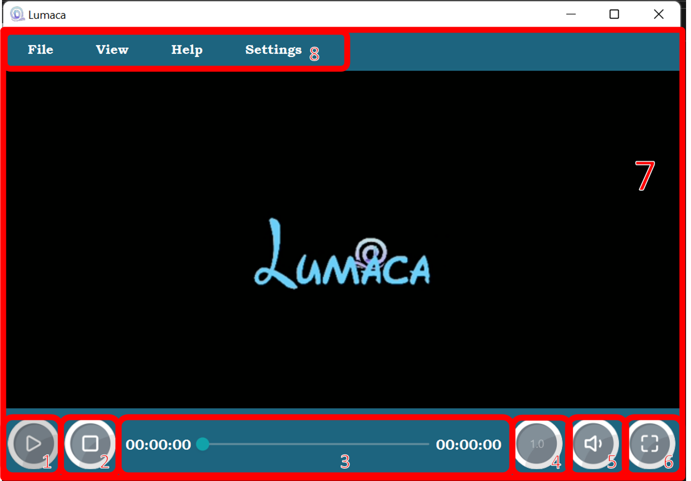
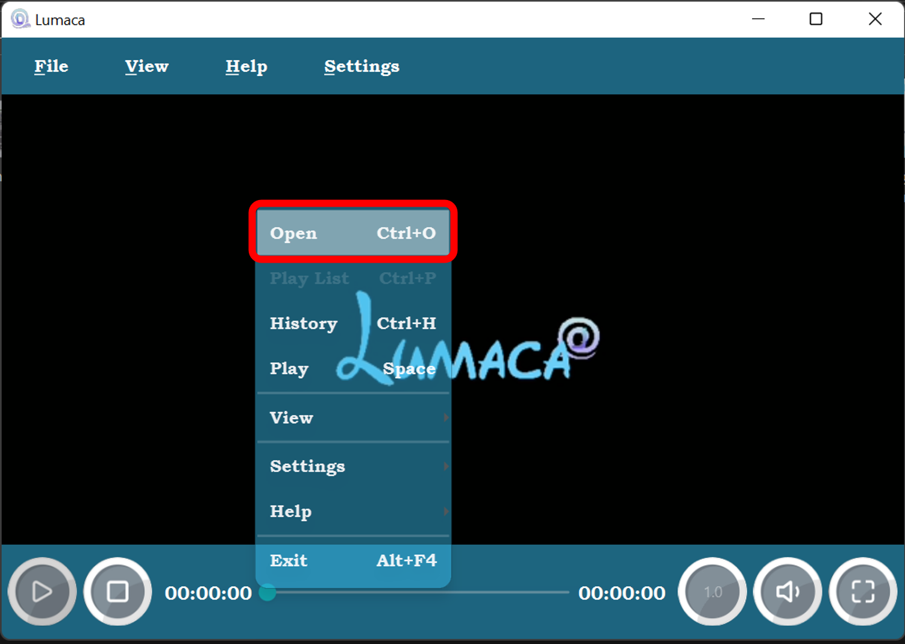
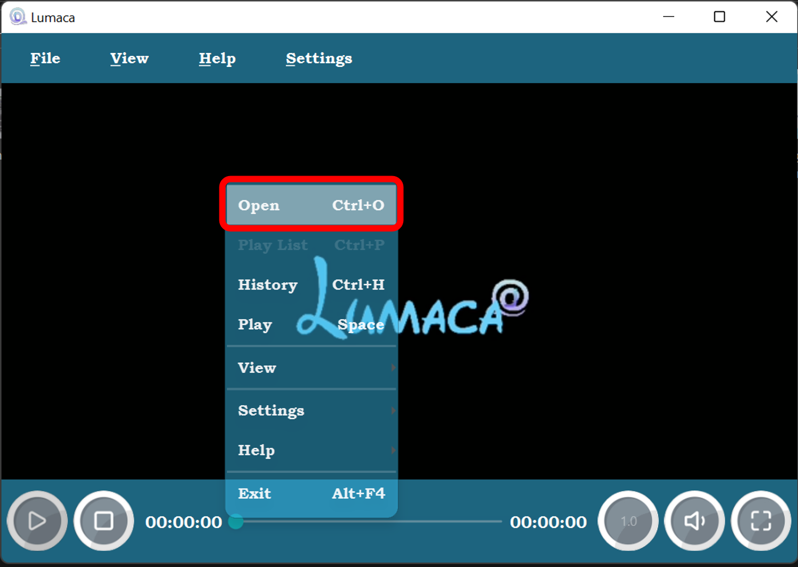
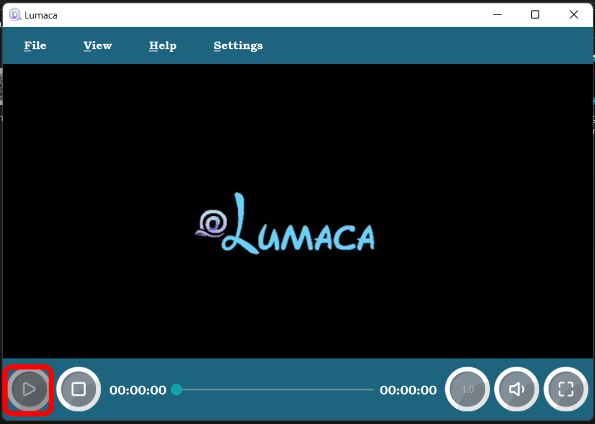
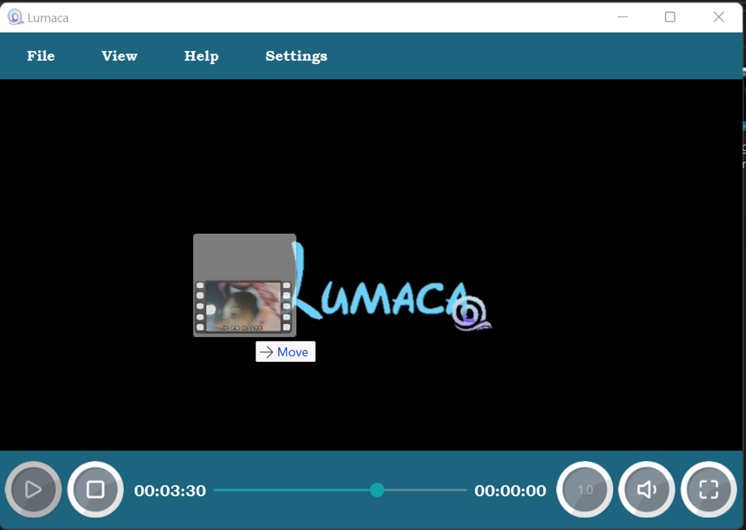

注意：如果打开文件后没有播放媒体，请重新打开。 这是一个 Bug。
主视窗
01. 播放按钮
02. 停止播放按钮
03. 播放进度条
04. 播放速率
05. 音量控制
06. 全屏设置
07. 播放器
08. 菜单栏
如何打开文件
您可以使用快捷键 Crtl + O 来打开媒体文件。

或者您可以使用右键以及菜单栏中的 Open file 栏目以打开媒体文件:
 

其实，在没有媒体文件播放的时候您可以直接点击 播放 按钮来打开您要打开的媒体文件
还有还有，你也可以直接拖动媒体文件到应用里面来播放吖。
菜单栏以及右键菜单
菜单一共被划分为三个区域，即 File , View , Help , 以及 Settings 。